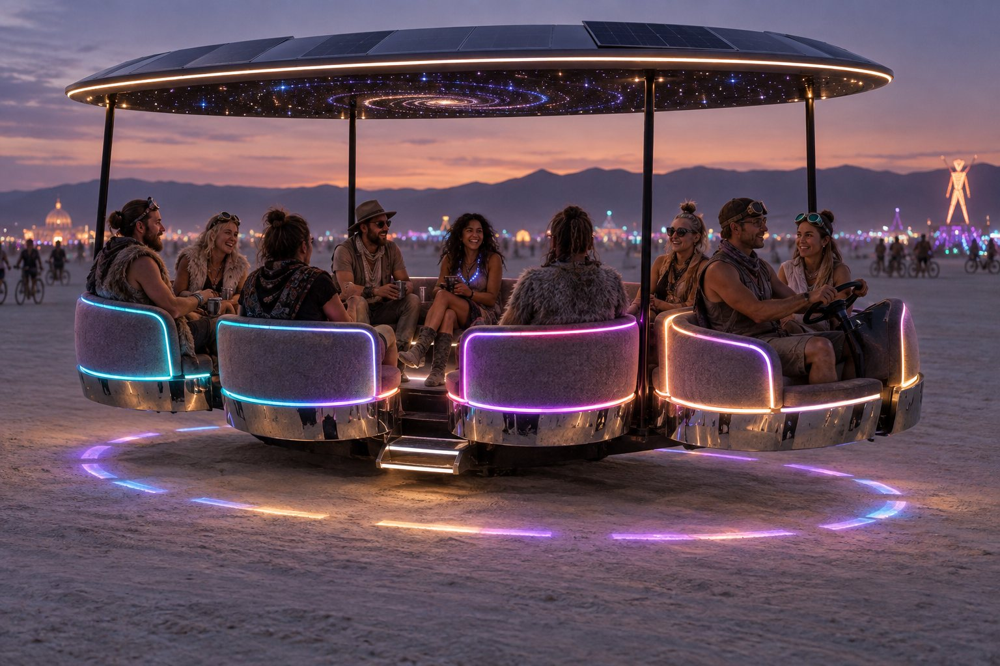
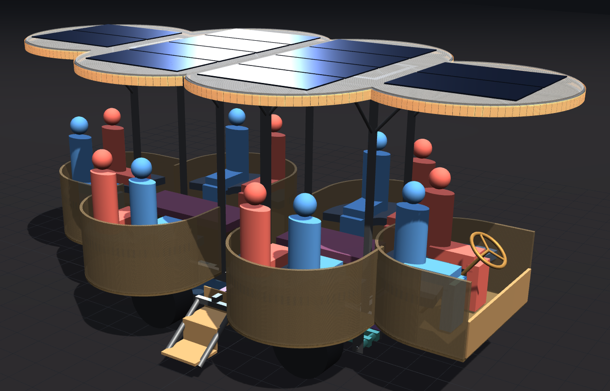

Plan of record · revised 13 September 2026
Art car v2
A small custom electric chassis that drives onto a rented trailer under its own power, with six two-seat pods cantilevered off its sides and ends under a lit cloverleaf roof. Everything the riders sit on is a module that comes off for transport.
The goal
Replace the current car — a ~1,000 lb Taylor-Dunn burden carrier with a plywood body and nine PVC hoops — with a car built for how it is actually used: twelve people on the playa at 5 mph, at night, with the lights on, for a week, and then trailered home behind a rented RV. The riders sit two to a pod facing the car, low, with nothing above their shoulders, so the focus is on the art outside the car; the roof is one lit shape over all of them with solar on top; the floor kneels so people can step on and off.
The chassis is deliberately small and plain: a welded steel rectangle with a hub motor and an air spring at each corner and the battery as a rolling sled underneath. All the character lives in the modules bolted to it — pods, stairs, roof — which is also what makes it fit on a 6 × 12 trailer and lets any one piece be rebuilt without touching the rest.
The constraints
These are fixed. Every design decision below is downstream of them; the specification carries the exact numbers.
Transport
U-Haul 6 × 12 ramp trailer (143″ × 72″ deck, 57″ ramp opening, 3,710 lb load, 1,810 lb on the ramp) towed by a rented Cruise America 30′ RV. Target gross trailer weight 5,000 lb: trailer 2,290 + car ≈ 2,740 = ≈ 5,030 before cargo, so the battery sled and the loose modules ride in the RV.
Chassis envelope
At most 54″ × 120″. The bare car has to drive up the 57″ ramp on its own wheels, so the deck stays at the chassis width and everything wider is a demountable module hung outside it.
Playa
BRC speed limit 5 mph, day and night. Mutant-vehicle licensing: radically modified appearance, conventional steering, lit perimeter after dark. The 36–48″ guardrail rule applies to levels 84″ or more above the playa — the pod floors are 24″, so rim heights are a design choice; any stairs need a secure railing. Dust: anything unsealed dies.
Service and shop
Any corner swappable on the playa with a jack and hand tools; carry a spare. MIG-welded steel throughout the load path; a laser cutter with a 19 × 11″ bed for panels; every module lifted onto the car by two people.
What it looks like


The systems
Each system has its own page: what it is, what has been decided, the key numbers, the model that draws it, and what is still open.
Drivetrain
A 54 × 120″ welded steel ladder frame with four independent hub-motor corners on trailing arms and air springs, front steering on inclined kingpins, hydraulic brakes and a ~5.6″ kneel. The battery sled rolls under and bolts up.
Four QS205 car hub motors · 66″ wheelbase, 43″ track · D2500 air springs · ~2,740 lb as drawn
The pods
Six 48″ two-seat loveseats, each a welded steel frame on two hitch-receiver arms that slide into the chassis rail, with a ply shell and a lit diffuser wall. Riders face the car. The front pod is the driver's, turned round with pedals, a wheel and a gate.
U-shaped, 48 × 36″ · ~128 lb each · 25″ rim · 12 light modules per pod
The roof
Six overlapping leaves, one over each pod, as two aluminium halves on eight posts at the leaf valleys, with a 3″ lit rim around the edge and two flex solar panels per leaf. Ottoman benches in the aisle under it.
Leaves r = 32″ · rim top at 102″ · ~1,700 rim LEDs · 12 × 100 W · ~210 lb
Lighting
The lit pod walls, the mirror skirts and the roof rim — addressable LEDs on from sunset to sunrise, budgeted from what the current car actually draws (one 100 Ah 12 V battery, most of a night) rather than from a data sheet: sparse, saturated patterns at a 10 % average power fraction, and fewer LEDs where nobody can tell.
~4,700 LEDs · ~200 W average · ~2.2 kWh a night · ~9 % of the pack · lit 11 h
Electrical
A 48 V LiFePO4 sled (two 16S strings of EVE LF280K, 28.7 kWh nominal) feeding four FOC controllers; 12 V rails per lighting zone through DC-DC; ~4,700 addressable LEDs (the lighting page has the budget); 1.2 kW of roof solar; nightly generator charging at camp.
51.2 V nominal · 23–26 kWh usable · ~4–12 kWh per night · 2–6 h to recharge
Specification
Every governing number in one place — envelope, weights and corner loads, wheel and steering geometry, kneel, pod and roof dimensions, pack, transport and BRC — with where each one comes from.
Bill of materials
What gets bought, what gets welded and cut, and what needs a machine shop, with candidate parts and rough costs per system.
Corners ~$4–6.5k · pack ~$3.6k DIY · pods ~$5.3k · roof, brakes, air, wiring on top
Construction
The order things get built and proven — one front corner and a rack fixture first, then one pod weighed before the other five — plus how the car travels as modules and goes back together at camp.
The models
Four interactive models draw the car from the same numbers the pages quote. Each opens in a simple mode with only the controls a visual designer would want to move; advanced adds every parameter and the full engineering readout. Nothing to install — open the file in a browser.
- model/frame-3d.html — the whole car: frame, corners, steering, pods, stairs, roof, battery sled, and a trailer-stack view. simple · advanced
- model/loveseat-build.html — one pod, every tube and panel, with weight, cost and a cut list; driver-pod toggle. simple · advanced
- model/loveseat-3d.html — the seat ergonomics: two riders in a pod, seat and rim heights, fit. simple · advanced
- model/drivetrain-3d.html — the corners, steering linkage and battery sled as buy / fabricate / machine parts, with a torque and range calculator. simple · advanced
How we got here
The plan above is where the project stands; it is not where it started. How we got here keeps the nine body concepts Selina rendered, the core-shape and roof studies, the alternatives that were modelled and set aside — including the Taylor-Dunn B-248 donor study — and a dated decision log. The underlying working documents are still here too: the design notebook (constraints, chassis concept, battery, the volumetric study of all nine concepts), the pod design notes, and the drivetrain review with its response.